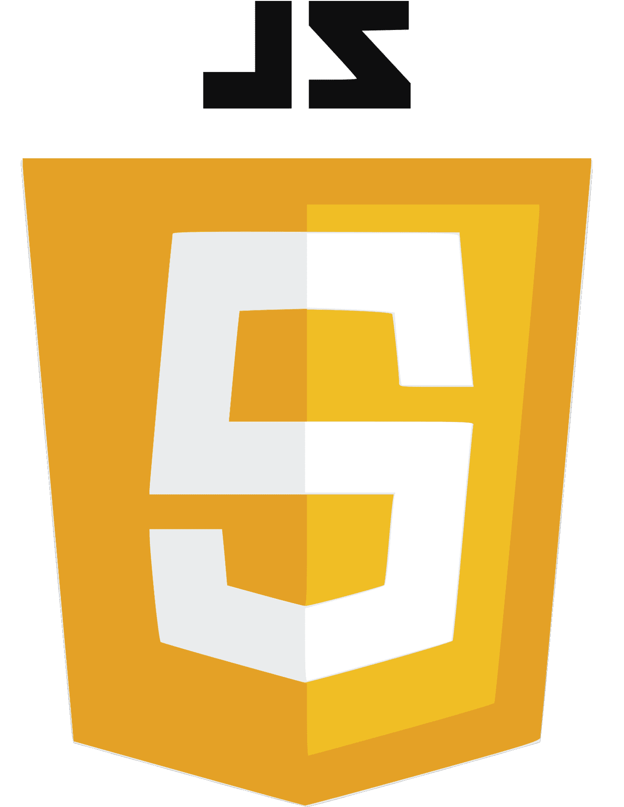
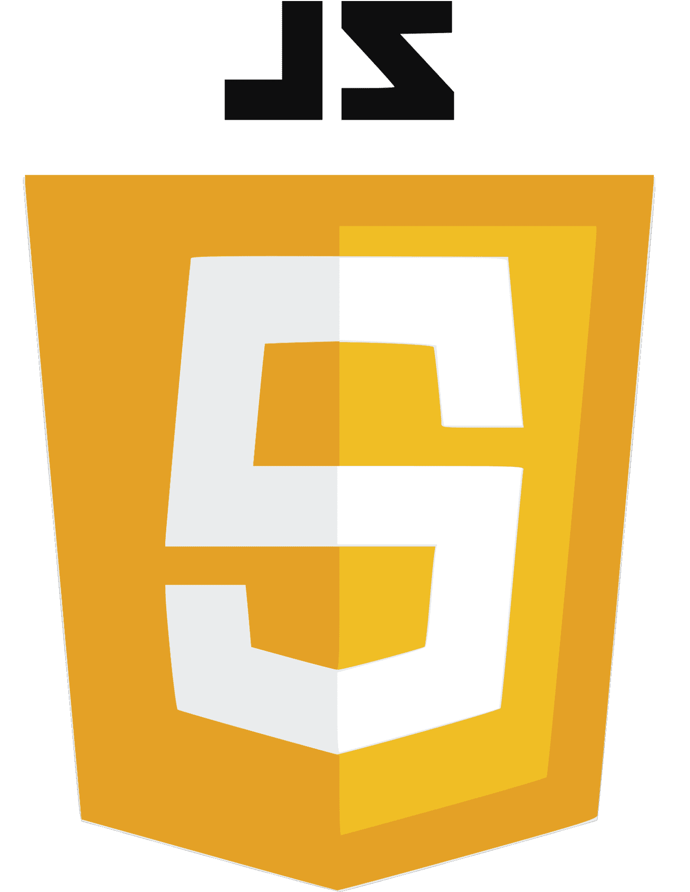

Tetris Video game on D10 Lite FPGA
Champaign, IL
Apr 2021 - May 2021
Quartus Prime:
Designed basic logic on Quartus Prime Platform to output in VGA format and a SoC - NIOS II processor for USB control.
FPGA I/O: Used Xbox One Controller Drivers to function on the FPGA for game movement and general I/O.
Game Sprites: Created custom block sprites that are projected in the VGA format and saved in a
two-dimensional, tri-directional shift register.


 
